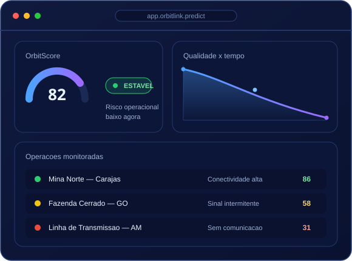

🚀 Plataforma SaaS de Inteligência Orbital
Monitoramento inteligente para operações remotas
Antecipe riscos usando GPS, satélite, sensoriamento remoto e Edge Computing.
- 0antecipação de risco
- 0dimensões monitoradas
- 0processamento na borda

Construído para operações de
- Mineração
- Agronegócio
- Energia
- Logística
Operar no limite da conectividade
Operações remotas sofrem com clima imprevisível, conectividade instável e falta de monitoramento inteligente em campo.
Sem informação em tempo real, cada hora parada aumenta riscos para equipes e ativos.
Tecnologias da plataforma
Comunicação via Satélite
Conectividade orbital onde a rede terrestre não alcança.Sensoriamento Remoto
Análise de clima e terreno a partir do espaço.Edge Computing
Processamento local e decisões em tempo real.
Para onde vamos
Objetivos da solução
Entregar previsibilidade e segurança para operações remotas por meio de tecnologia espacial.
- Antecipar riscos antes de virarem incidentes.
- Reduzir paralisações não planejadas em campo.
- Unificar clima, conectividade e infraestrutura.
- Apoiar a decisão com indicadores claros.
98%
de cobertura de monitoramento contínuo nas operações conectadas.
Público-alvo
Mineração
Frentes isoladas com logística e risco elevados.Agronegócio
Fazendas extensas em áreas de baixa conectividade.Energia
Usinas e linhas em locais remotos.Logística
Rotas longas em corredores sem cobertura.Benefícios
Mais segurança
Alertas preventivos protegem equipes e ativos.Mais eficiência
Menos paradas e melhor uso de recursos.Previsibilidade
Decisões baseadas em dados e simulação.Menos custos
Antecipar riscos evita perdas e retrabalho.Visão unificada
Clima, conexão e terreno em um só lugar.Opera offline
Edge mantém a inteligência mesmo sem conexão.Como o OrbitLink funciona
Coleta, processa na borda, classifica o risco e age continuamente.
-
1
Coleta
Sensores e fontes orbitais captam clima, posição e conexão. -
2
Processa na borda
Edge Computing analisa os dados localmente. -
3
Classifica risco
O OrbitScore traduz tudo em risco objetivo. -
4
Age
Alertas e recomendações chegam ao gestor.
Qual o risco da sua operação?
Responda dez perguntas e descubra o nível de risco da sua operação.
Fale com a gente
Solicite uma demonstração
Conte sobre sua operação e veja o OrbitLink Predict em ação.
Pronto para antecipar riscos?
Coloque a inteligência orbital a favor da sua operação.
Solicitar demonstração